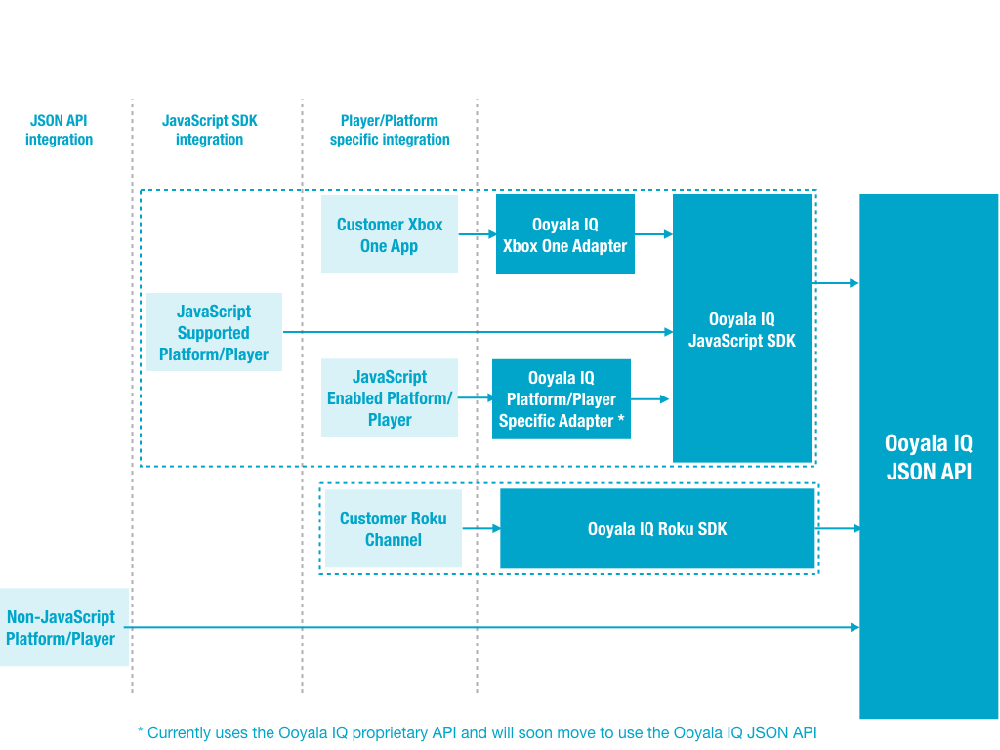
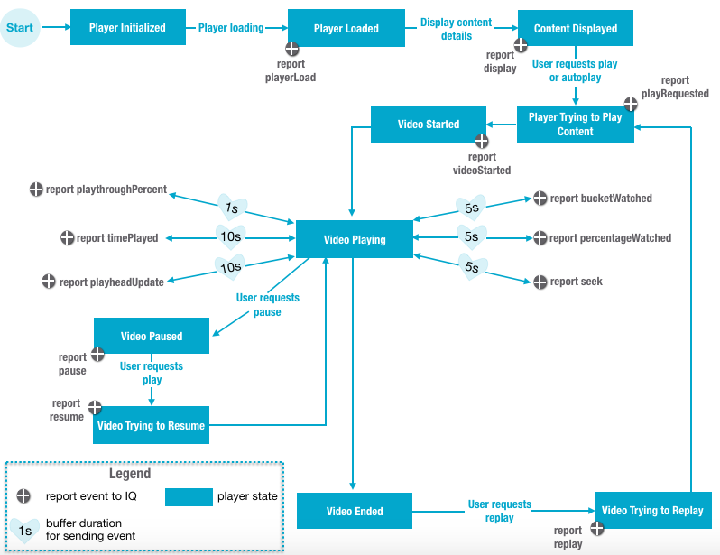

Use the new Ooyala IQ JSON API to communicate
your third-party player's events to Ooyala IQ. You can use this endpoint to send
JSON data to Ooyala IQ or you can use one of the out-of-the-box SDKs. For this
release, we are offering an out-of-the-box SDK for Roku.
The Ooyala IQ SDK for Roku sends JSON data to the Ooyala JSON API
endpoint and automatically follows the best practices for what events should be sent
when, and makes sure that all required fields are present. We recommend using the
Ooyala IQ SDK for Roku with your Roku integrations, as it makes the Ooyala IQ
implementation easier. For more details on the Ooyala IQ SDK for Roku, see Ooyala IQ SDK for Roku Integration.

Events
Ooyala IQ needs to receive information about player events to
properly display analytics data. The figure below shows the flow of when each player
event should be recorded.

- playerLoad: Called when the player has first
loaded.
- display: Called when the media is ready (title,
description, other metadata). This may or may not include the video itself.
This is equivalent to the display metric in Ooyala
IQ.
- playRequested: Called when the user clicks the play
button or autoplay occurs.
- videoStarted: Called when the actual non-ad video
content starts playing.
- bucketWatched: Called to capture which part of the
video the viewer has watched (position dependent). The video is divided into
40 buckets. If the viewer watches the first bucket of the video (0-2.5%) and
then skips to the last bucket (97.5-100%) and watches it, you should send
two bucket watched events [0-2.5%] and [97.5%-100%].
There are 40
buckets, where each bucket is of size 25 denoting 2.5%. If the viewer
watches the same part (bucket) of the video again and again, that
viewing event should be sent each time it is watched (the player should
not de-duplicate views of the same part of the video). For example, if a
viewer watches the 2.5% - 5% bucket over and over again for 5 times, you
should send the event 5 times.
This metric is per-mille, with the
payload being from and to of the bucket. There are 40 buckets total for
a video, where each bucket is of size 25 denoting 2.5%. If you see from:
1 and to: 25, that means the viewer has watched bucket number
1.
- playthroughPercent: Called to mark the completion of a
quartile (25%, 50%, 75% and 100%) of the media. This indicates that the user
has reached the % completion via seeking to the quartile or watching the
video. Once a playthrough event has been generated, rewinding the video
should not resend the playthrough event for that quartile.
- timePlayed: Called to capture the amount of time the
media has played since the last timePlayed event.
- percentageWatched: Called to capture the percentage of
the video that the viewer has watched (position independent). The video is
divided into 40 buckets. If the viewer watches the first bucket of the video
(0-2.5%) and then skips to the last bucket (97.5-100%) and watches it, you
should send two percentage watched events [0-2.5%] and [2.5%-5%].
If the
viewer watches the same part (bucket) of the video again and again, that
viewing event should only be sent once (it’s the player’s responsibility
to de-duplicate views of the same part of the video). If you add all the
percentage watched for a viewer while they were watching a video, it
should always be <= 100%.
This metric is per-mille,
with the payload being from and to of the bucket. There are 40 buckets
total for a video, where each bucket is of size 25 denoting 2.5%. If you
see from: 1 and to: 25, that means the viewer has watched bucket number
1.
- playheadUpdate: Called when the video playhead moves.
This should be called often (every 2-3 seconds).
- seek: Called when the video has been seeked.
- pause: Called when the video is paused.
- resume: Called when the play button is clicked while
the video is in the pause state.
- replay: Called when the video has been requested to be
replayed.
- Custom Event: Called to coordinate with an event that you
define.
Note: At this time custom events can be ingested, but we can only
store the information. Ooyala IQ is not able to process custom events,
and you will not be able to access this information from the Ooyala IQ
backend. However, you may wish to start sending Ooyala IQ your custom
events now so that you have the data there for when custom events are
supported by Ooyala IQ.
Additional Data
Ooyala IQ can also collect details about the following from
the player and your JSON input for analytics purposes:
- User details.
- Device details.
- Asset details.
- Geographic location details.
Note: Ooyala IQ expects latitude and longitude
values to be integers.
- Player details.
- Custom dimensions.
Note: At this time custom dimensions can be ingested, but
we can only store the information. Ooyala IQ is not able to process
custom dimensions, and you will not be able to access this information
from the Ooyala IQ backend. However, you may wish to start sending
Ooyala IQ your custom dimension now so that you have the data there for
when custom dimensions are supported by Ooyala IQ.
Best Practices
- Only send data to Ooyala in the intervals specified in the API documentation. Each
event is marked with a priority that indicates how often it should be sent (high
indicates to send the data every second, mid indicates to send the data every 5
seconds, and low indicates to send the data every 10 seconds).
- Make sure to always send the device ID.
JSON API Integration
The JSON API endpoint is https://l.ooyala.com/v3/analytics/events.
You can view API documentation for the JSON API at docs.brightcove.com/apidocs-ooyala//iq_json_api/analytics-json-entry.html.